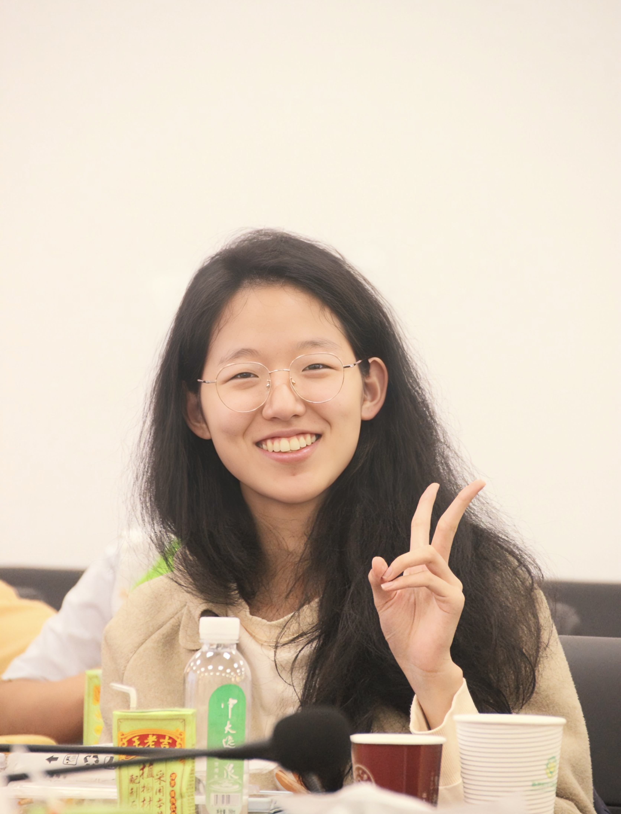
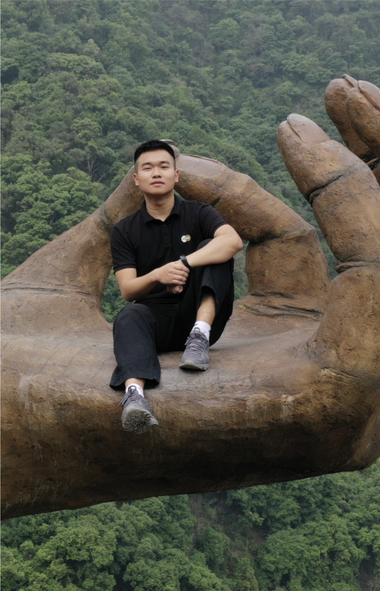
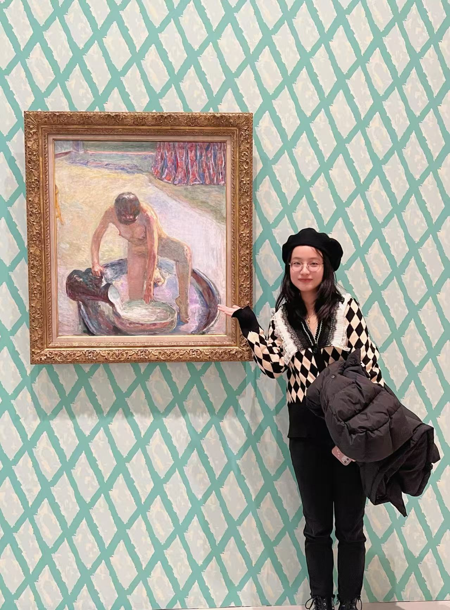

---
title: 团队成员简介
layout: Post
content-type: static
---
理事会
HUG Future第三届理事会共有3名成员，分别来自美国、德国和中国，研究兴趣涵盖能源地理、环境治理、社区韧性、文化地理与旅游地理等方向。
李寻欢
HUG Future倡议发起者兼第三届理事会主席，负责HUG Future组织的管理与发展。美国纽约州立大学布法罗分校地理学博士研究生，研究兴趣为能源转型与区域发展、能源正义和环境治理。
More >>

朱安淇
HUG Future第三届理事会成员（技术支持组组长），负责HUG Future网站的日常更新与HUG Network学术网络的管理。德国慕尼黑大学地理系博士研究生，研究兴趣为气候/洪水/社区韧性、多主体建模、环境社会学、跨学科研究、气候投融资，长期支持和参与环保社团和ENGO活动。

谢雨欣
HUG Future第三届理事会成员（媒体运营组组长），负责HUG Future微信公众号与B站新媒体运营。中山大学人文地理与城乡规划专业本科生，研究兴趣为文化地理（可持续生产与消费、城市消费空间）与旅游地理（日常环境与旅游体验、社区旅游与社区参与）。
工作组
HUG Future第三届工作组成员来自海内外不同高校和研究机构，研究兴趣涵盖经济地理、交通地理、生态经济、城乡与区域发展、健康地理、城市研究、可持续发展等多个方向。
丁子军
根特大学博士研究生，研究兴趣为社会与经济地理，交通网络与区域创新。
王立文
根特大学博士研究生，研究兴趣为航空运输网络、航空公司智能决策、交通地理。
张凯莉
德克萨斯农工大学博士研究生，研究兴趣为生态足迹、城市地理、大数据分析等。
祝巧玲
中国科学院地理科学与资源研究所博士研究生，研究兴趣为全球生产网络、产业集群、产业转移、贸易地理。

李文斌
南京理工大学博士研究生，研究兴趣为生态文明、民族经济、理论经济学。
张溢堃
弗吉尼亚理工博士研究生，研究兴趣为生态经济，农业资源利用，农业生态系统建模。
王冉
华东师范大学硕士研究生，研究兴趣为人才流动与创新地理学。

陈天麒
布里斯托大学商学院博士研究生，研究兴趣为质性方法主导的流动性（平台流动性、流动性正义）、社会文化地理以及劳动地理研究。
韦淼晶
哥伦比亚大学硕士研究生，研究兴趣为城市空间分析，城市韧性与可持续发展，城市环境正义。
郑宇
中国地质大学（武汉）硕士研究生，环境科学与工程专业，研究兴趣为乡村土地利用规划与可持续发展。
张金鹏
厦门大学本科生，日语专业，研究兴趣为社会老龄化、智慧照护、社区养老等。
张郑颖
北京大学人文地理学硕士研究生，研究兴趣为创新地理与区域发展。
彭宁叶子
香港中文大学博士后，研究兴趣为健康地理学。
薛苗
中南财经政法大学计算机科学与技术专业毕业，现于西北某县城公共法律服务中心工作。

张佳
墨尔本大学博士研究生毕业，研究兴趣为平台经济、经济地理、创业活动。